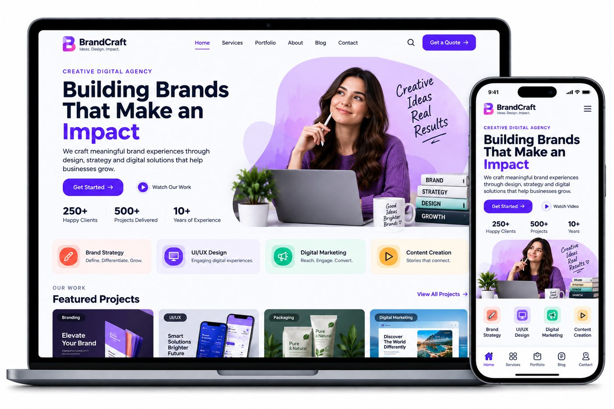
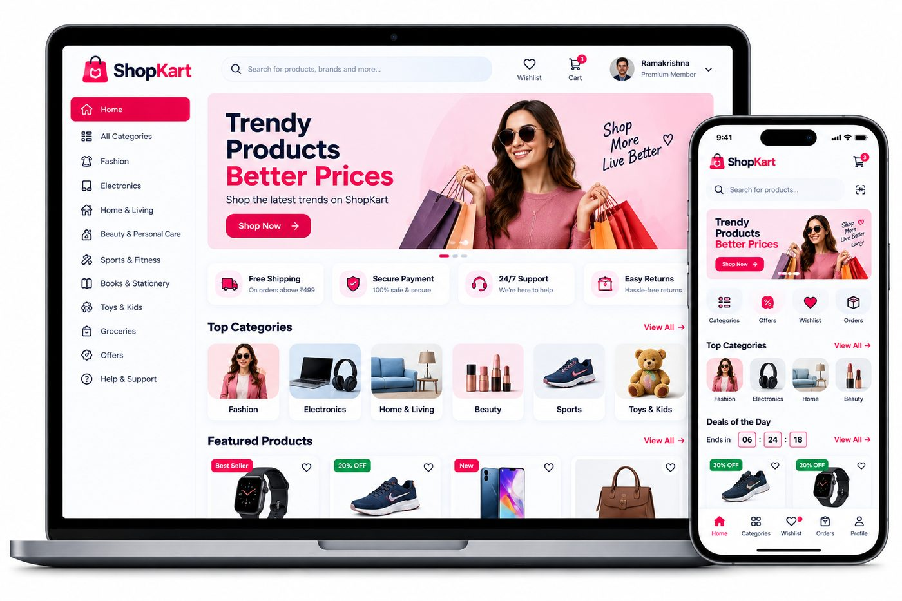
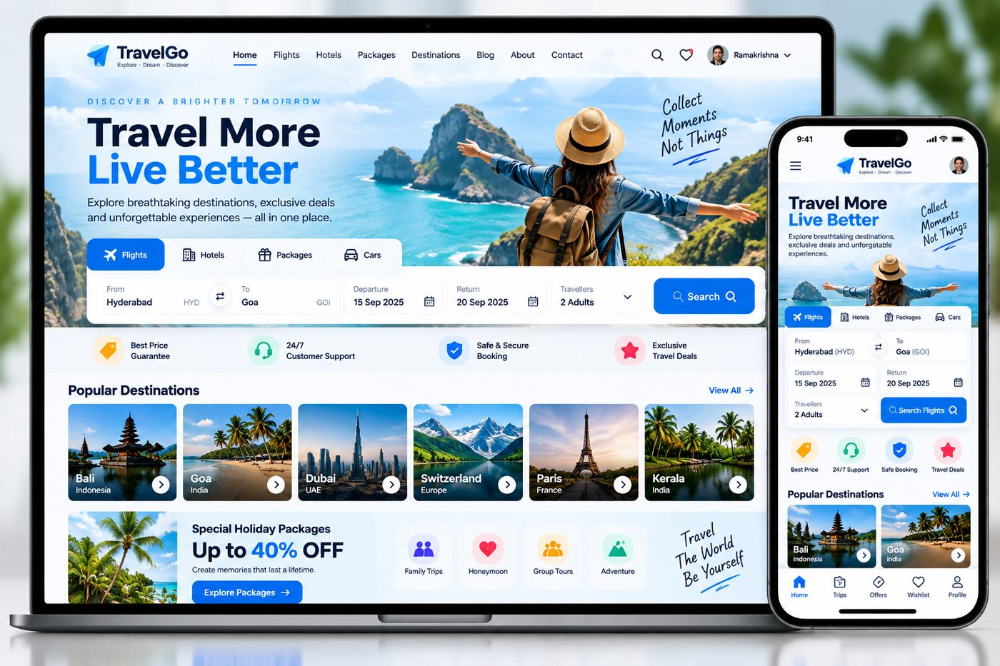
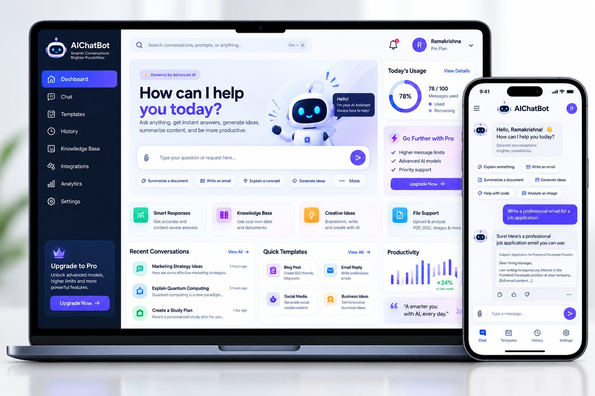

HRMS Pro
Human resource management for growing teams: employee records, attendance, leave, payroll and performance tracking, with separate role-based views for HR, managers and employees.
A mix of client delivery work and the in-house products we keep improving. Every screen below was designed and engineered by our team.
Filter by what we built. Every screen below was designed and engineered by the VALTORIX team.
Human resource management for growing teams: employee records, attendance, leave, payroll and performance tracking, with separate role-based views for HR, managers and employees.

A personal finance control panel that pulls accounts, budgets, goals and transactions into a single readable view, with spending breakdowns that make the month obvious at a glance.

A learning platform for institutions — course catalogue, enrolments, progress tracking, assignments and a learner view that works the same on a phone as on a desktop.

Clinic operations software: appointments, patient records, prescriptions and billing, designed around how a front desk and a doctor actually work rather than generic admin screens.

A marketing site for a creative studio: portfolio architecture, service pages, an enquiry flow and a design system that lets the studio publish new case studies without a developer.

A storefront with a real catalogue — product variants, stock control, a basket that behaves on mobile, and order flow that reaches the team over WhatsApp as well as email.

A travel booking site built around search: destination browsing, package detail pages, a booking flow that works on a phone, and a package management layer behind it.

An assistant that answers customer questions from your own content, escalates to a human when it is unsure, and hands the team a summary instead of a raw chat log.
Product names above are our own builds and concept products. Client delivery work — including SiteTrack and the Vayomi Clothing store — is covered in the case study below.
SiteTrack was built for a construction team that was tracking building stages in a shared spreadsheet and relaying progress through a daily status call. The brief was simple: make the current state of every stage visible without asking anyone.

Delivered as a responsive web application, deployed and supported by the VALTORIX team.
You get the same process whether it is a one-page site or a full business system.
Start a projectWe learn your process, your constraints and what “working” means for you.
A written brief, feature list, timeline and estimate before any code is written.
Wireframes and a working design system, reviewed with you before build.
Iterative development with a live preview you can open and use at every stage.
Deployment, handover, training and a support window after go-live.
“VALTORIX built our Vayomi clothing store with a clear catalogue and an easy enquiry flow. Support has been responsive throughout.”
“Our HRMS work helped us pull employee data, attendance and payroll into one place instead of three different files.”
“SiteTrack helped our team follow construction stages and daily site updates far more clearly than the register we used before.”
Send the brief and we will come back with an approach, a timeline and an estimate.